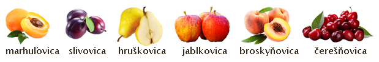

Vitajte na stránke pálenice Brestov.
Obec Brestov sa nachádza v okrese Humenné, 3 kilometre severne od okresného mesta Humenné. Výrok, že v každej poriadnej slovenskej dedine nesmie chýbať kostol a jedna krčma, už neplatí. Nesmie chýbať ani pálenica. Tu, v dedine Brestov neďaleko Humenného stojí pálenica Frndžalica s.r.o.
Služby
Ponúkame tieto služby
- Príprava kvasu
- Odkôstkovanie sliviek a marhúľ, príprava jabĺk a hrušiek na profesionálnom stroji
- Kvas je čerpaný obsluhou profi čerpadla
- Destilácia je prevádzaná na najmodernejšom destilačnom zariadení s deflegmátorom , ktorý umožňuje získať vysokú kvalitu destilátu i pri nekvalitnom kvase
- Chuť a vôňu destilátu zvyšuje aromátor
- Profesionálna obsluha a poradenstvo
Zákon
Pre jedného pestovateľa a jeho domácnosť je možné za jedno výrobné obdobie, t.j. od 1. júla do 30. júna nasledujúceho roka v liehovare na pestovateľské pálenie ovocia vypáliť destilát z ovocných kvasov v množstve 43 la, t.j. 43 litrov 100% alkoholu pri zníženej sadzbe spotrebnej dane z liehu (5,4 Euro/la); pri prekročení tohto množstva musí pestovateľ za prekročené množstvo zaplatiť celú výšku základnej sadzby spotrebnej dane z liehu (10,80 Euro/la).
V liehovare možno vyrábať destilát len z dopestovaného ovocia v miernom podnebnom pásme, z jeho kvasov, z plodov viniča hroznorodého v čerstvom stave alebo v skvasenom stave vrátane ovocných vín a hroznových vín, ktoré neobsahujú cudzie cukornaté alebo iné prímesi.
Prevádzkovateľ môže prijať kvas na ďalšie spracovanie len na základe písomnej žiadosti pestovateľa o výrobu destilátu.
Ak si pestovateľ v príslušnom výrobnom období dal vyrobiť destilát aj v inom liehovare, k žiadosti priloží písomné vyhlásenie o tejto skutočnosti, v ktorom uvedie najmä množstvo vyrobeného destilátu v litroch alkoholu (la) a sídlo liehovaru s potvrdením liehovaru o množstve vyrobeného destilátu.
Prevádzkovateľ liehovarníckeho závodu na pestovateľské pálenie ovocia môže vyrobiť pre pestovateľa lieh len na základe žiadosti o výrobu destilátu. Pri výpočte výšky dane je prevádzkovateľ liehovarníckeho závodu na pestovateľské pálenie ovocia povinný použiť príslušnú sadzbu dane podľa množstva liehu v la. vyrobeného pre pestovateľa, pričom prihliada na množstvo doteraz vyrobeného liehu, ktoré pestovateľ uviedol v žiadosti o výrobu destilátu.